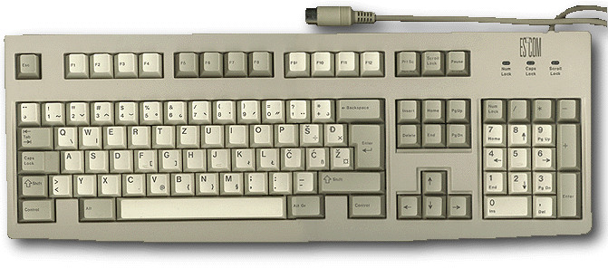

Upoznaæete se sa tastaturama koje se koriste za rad sa PC kompjuterima. Èak i korisnici koji godinama rade za kompjuterom, u ovom biltenu mogu pronaæi neki podatak koji nisu znali. Tastatura predstavlja sastvani deo svakog kompjutera, tkzv. korisnièki interfejs.
AT tastature sadrže 101 ili 102 tastera s prednje strane. Neki tipovi tastatura imaju prekidaè sa donje strane koji joj omoguaæva da radi u AT ili XT modu.
Kabl kojim se tastatura prikljuèuje na kompjuter, dugaèak je oko 2 metra ali Vam se èini kraæim jer je dve treæine kabla spiralno umotano. Unitar tog tkzv. oklopljenog kabla nalazi se 5 žica na èijem se kraju nalazi 5pinski muški DIN konektor. U zavisnosti od kvaliteta, težina tastature kreæe se od par stotina grama do 3-4 kilograma. Što je teža, solidnije je izrade. Okvirne dimenzije su 500 x 200 x 40 mm.
Pre povezivanja sa kompjuterom okrenite tastaturu sa zadnje strane i proverite da li postoji prekidaè sa oznakama XT i AT. Ako postoji proverite da li je postavljen u položaj AT. AT poziciju na prekidaèu koristite kada radite sa kompjuterima novije generacije ( 286, 386, 486 itd. ). XT poziciju koristite za rad sa starijom generacijom PC kompjutera.
Ukoliko je povežete sa kompjuterom sa prekidaèem postavljenim u XT položaj, prilikom ukljuèenja AT kompjutera èuæe se isprekidano pištanje ali nigde Vam neæe biti ispisana poruka da je tastatura nepravilno selektovana. Iskljuèite kompjuter i prebacite prekidaè u AT položaj. Isti simptomi su prisutni ako je neki od tastera zaglavljen.
Prilikom stratovanja kompjutera testira se tastatura. Iz kompjutera se šalje signal kojim tastatura zapoèinje samotestiranje. Ako je sve u redu vraæa HEX signal AA. Svaki drugi signal javlja grešku u tastaturi i o tome se ispisuje odgovarajuæe upozorenje na ekranu monitora.
Sama tastatura, posmatrana odozgo, sastoji se iz 5 fizièki odvojenih sekcija tastera.
Postavljeni su jednako kao na pisaæoj mašini. Generalna podela je na QWERTY i QWERTZ tastature. QWERTY su amerièki standard i prepoznaju se po rasporedu prvih šest tastera sa slovima, gledano odozgo (odmah ispod brojeva). Sa malim izmenama postavljen je i nemaèki QWERTZ standard. Samo su slovima Y i Z zamenjena mesta ali se zato raspored drugih pomoænih karaktera bitno razlikuje.
Tehnièki gledano sve tastature su indentiène. Raspored karaktera koji koristite, programski se uparuje sa slovima i znacima koji su obeleženi na tasterima. Kod kupovine morate znati koji Vam je raspored slova i znakova na tasterima potreban da ne bi dolazilo do zabune prilikom kucanja.
 Važno!!! na SVAKOJ ASCII AT tastaturi
možete dobiti SVE znake iz ASCII tabele i to nije tehnièko
granièenje tastature.
Važno!!! na SVAKOJ ASCII AT tastaturi
možete dobiti SVE znake iz ASCII tabele i to nije tehnièko
granièenje tastature.
Potrebno je samo razumeti da slova i znaci koji su upisani na tasterima Vaše tastature nisu to što garantuje da æe se ti karakteri uvek pojavljivati na ekranu. Isti karakteri ae se pojaviti i na ekranu samo u sluèaju da se za upravljanje tastaturom koristi odgovarajuæi programeia koji obavezno ide uz svaki program koji koristite (tkzv. drajver za tastaturu).
Na vrhu tastature, u jednom redu, rasporeðeno je 12 višenamenskih funkcijskih tastera. U zavisnosti od programa koji koristite, tim tasterima dodeljena je odreðena funkcija, obièno vidno naznaèena na ekranu.
Taster F1 u svim programima funkciju pozivanja HELPa. Pritiskom na F1 taster na ekranu æe Vam se pojaviti objašnjenje kako da se snaðete u tekuæoj situciji. Retki su programi koji ne podržavaju ovu funkciju.
Za programe kojima je 12 funkcijskih tastera nedovoljno, u kombinaciji sa tasterom SHIFT dobijate još 12 (programskih funkcijskih tastera). Isto važi za kombinaciju sa CTRL i ALT tasterima. Na taj naèin, ukoliko program koji koristite to podržava, sa 12 funkcijskih tastera u kombinaciji sa SHIFT, CTRL ili ALT možete ostvariti 48 razlièitih funkcijskih poziva.
Tasteri sa strelicama imaju funkciju da pomeraju kursor u smeru u kome pokazuje strelica koja je upisana na tasteru.
Kursor predstavlja jednu trepteæu horizontalnu ili vertikalnu crtu na ekranu. Treperenjem nam skreæe pažnju na mesto na kome se nalazi. Sve promene koje unosimo preko tastature ( ili mišem ) poèeæe baš od pozicije kursora.
Iznad grupe tastera sa strelicama nalazi se grupa tastera kojima se takoðe upravlja kursorom. Pritiskom na PageUp taster pomerate kursor odnosno sadržaj celog ekrana za visinu 1 ekrana na gore. Tasterom PgDown radite isto to samo na dole. Tasterom Home kursor dovodite na poèetak tekuæeg reda a tasterom End na kraj istog. Posle pritiska na taster Insert menjate tekuæi mod u kome radite. Kada ste u Insert modu, sve što kucate biæe "ubaèeno u tekst" koji kucate a kada ste u Overwrite modu tekst koji kucate prekucavaæe tekst na koji nailazite kursorom. Pritiskom na tasterom Delete brišete sve što se nalazi na prvoj desnoj poziciji kursora ukoliko je tekst u pitanju. U svakom drugom sluèaju briše se ono što je selektovano, bilo mišem ili preko tastature.
Segment koji razlikuje XT od AT tastature i olakšava kucanje brojeva. Korisnici XT kompjutera vrlo èesto, po navici, koriste ovaj deo tastature za kontrolu kursora.
Tasterom NumLock birate da li æete koristiti brojeve ili funkcije Insert, Delete, Home, End, PageUp ili PageDown. Kada kucate brojeve aktivirate NumLock taster i odmah Vam zasvetli LE dioda NumLock. To je predefinisano stanje. Ukoliko imate nameru da taj deo tastature koristite umesto izdvojenih tastera koji se nalaze u grupi iznad kursora, dovoljno je da pritisnete još jednom taster NumLock i LE dioda æe se ugasiti.
U liniji sa funkcijskim tasterima, u gornjem desnom æošku, nalaze se tasteri PrintScreen, ScrollLock i Pause/Break.
Iz MS DOS okruženja možete odštampati sadržaj ekrana ukoliko pritisnete taster PrintScreen. Da bi ste dobili i grafièke karaktere na štampaèu, pre pritiskanja tastera otkucajte naredbu graphics. Pritiskom tastera Pause u nekim programima možete zaustaviti izvršavanje. Takoðe u MS DOS programima, u kombinaciji sa CTRL taterom pritisak na taster Pause/Break prekida izvršavanje programa. Vrlo korisno ako želite da prekinete izvršavanje neke beskonaène .BAT procedure ili programa za koji ne znate kako se izlazi iz njega.
U kombinaciji sa Shift tasterom dobijate velika slova ili karaktere koji su oznaèeni na gornjoj polovini tastera. Upotrebljava se za kucanje pojedinaènih velikih slova. Ukoliko kucate cele reèi ili reèenice velikim slovima, za to koristite CapsLock taster iznad levog Shift tastera, baš kako se to radi i na pisaæoj mašini. Tabulator (TAB) pomera kursor za nekoliko pozicija u desno.
Kada pogrešno otkucate neki karakter, brišete ga tasterom sa strelicom koja pokazije na levo (<-) i nalazi se u gornjem desnom æošku sekcije sa slovima i brojevima. To je Backspace taster i on briše prvi levi karakter do kursora. Ako brišete karakter koji nije sa leve strane kursora veæ negde ranije u otkucanom tekstu, prvo se pomoæu tastera sa strelicama pozicionirate na ili do karaktera koji želite da obrišete. Ne zaboravite, za brisanje karaktera levo od kursora koritite Backspace a za karaktere na kojima je podvuèeni kursor ili za karaktere koji su desno od kursora koristite taster Delete.
Pritiskom na taster Alt i kucanjem broja na numerièkoj tastaturi možete dobiti na ekranu svaki karakter iz kodnog rasporeda koji koristite. Pogledajte tabelu u prilogu ovog biltena. Veliko slovo A dobijate pritiskom na taster Shift i tastera sa znakom A. Isto slovo A dobija se pritiskom tastera Alt i kucanjem broja 65 na numerièkoj tastaturi. Jednostavno zar ne! U tome je cela tajna svih skrivenih karaktera iz ASCII kodnog rasporeda.
U Windows okruženju koristi se ANSI i UNICODE raspored. Da bi ste dobili slovo A u WINDOWS-ima kucajte uz pritisnut taster ALT i broj 065 ( obavezno i nulu kao prvu cifru ).
Istovremenim pritiskom na tastere Ctrl + Alt + Delete resetujete kompjuter. Tu kombinaciju koristite ako ne možete drugaèije da preuzmete kontrolu nad kompjuterom (ako se zaglavi).
| Napon: | +5V DC |
| Struja: | 250mA max |
| Vek trajanja pod naponom: | 10 god. |
| Èuvanje: | -20°C do +70°C |
| Upotreba: | 0°C do +50°C |
| Vlažnost okoline: | 30% - 95% u uslovima gde se ne kondezuje vlaga. |
Kodna stranica sadrži set od kojih svaki ima odgovarajuai broj. MS-DOS rezerviše karaktere od 0 do 31 za kontrolne karaktere. Tastature na tasterima prikazuju karaktere od 32 do 127. Karakteri od 128 do 255 zovu se extended karakteri. Da dobijete extended karaktere na ekranu Vašeg monitora uradite sledeæe:
1. U tablici sa odgovarajuaim kodnim rasporedom izaberite karakter koji Vam je potreban.
2. Pritisnite Alt taster i na numerièkoj tastaturi otkucajte
broj koji je napisan u tabeli a odgovara karakteru koji Vam je
potreban.
128 |
144 |
160 |
176 |
° |
192 |
A |
208 |
? |
224 |
a |
240 |
? |
|||
129 |
145 |
' |
161 |
! |
177 |
± |
193 |
Á |
209 |
N |
225 |
á |
241 |
n |
|
130 |
‚ |
146 |
' |
162 |
c |
178 |
2 |
194 |
 |
210 |
O |
226 |
â |
242 |
o |
131 |
147 |
" |
163 |
L |
179 |
3 |
195 |
A |
211 |
Ó |
227 |
a |
243 |
ó |
|
132 |
„ |
148 |
" |
164 |
¤ |
180 |
´ |
196 |
Ä |
212 |
Ô |
228 |
ä |
244 |
ô |
133 |
… |
149 |
165 |
Y |
181 |
µ |
197 |
A |
213 |
O |
229 |
a |
245 |
o |
|
134 |
† |
150 |
- |
166 |
¦ |
182 |
¶ |
198 |
A |
214 |
Ö |
230 |
a |
246 |
ö |
135 |
‡ |
151 |
- |
167 |
§ |
183 |
· |
199 |
Ç |
215 |
× |
231 |
ç |
247 |
÷ |
136 |
152 |
168 |
¨ |
184 |
¸ |
200 |
E |
216 |
O |
232 |
e |
248 |
o |
||
137 |
‰ |
153 |
™ |
169 |
© |
185 |
1 |
201 |
É |
217 |
U |
233 |
é |
249 |
u |
138 |
Š |
154 |
š |
170 |
a |
186 |
o |
202 |
E |
218 |
Ú |
234 |
e |
250 |
ú |
139 |
‹ |
155 |
› |
171 |
« |
187 |
» |
203 |
Ë |
219 |
U |
235 |
ë |
251 |
u |
140 |
O |
156 |
o |
172 |
¬ |
188 |
1 |
204 |
I |
220 |
Ü |
236 |
i |
252 |
ü |
141 |
? |
157 |
? |
173 |
|
189 |
1 |
205 |
Í |
221 |
Ý |
237 |
í |
253 |
ý |
142 |
? |
158 |
? |
174 |
® |
190 |
3 |
206 |
Î |
222 |
? |
238 |
î |
254 |
? |
143 |
? |
159 |
Y |
175 |
— |
191 |
? |
207 |
I |
223 |
ß |
239 |
i |
255 |
y |
Tabela sa extended karakterima